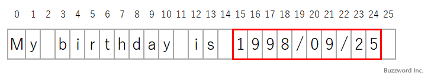
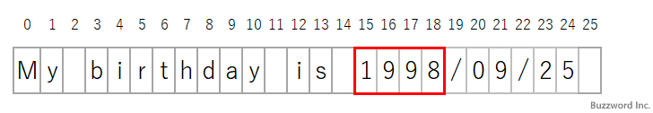

- Home ›
- Python入門 ›
- Python正規表現
マッチオブジェクトからマッチした文字列の情報を取得する(Match)
Pattern クラスの search メソッドや match メソッドで文字列がパターンにマッチすると戻り値としてマッチオブジェクトを返します。マッチオブジェクトでは Match クラスで用意されているメソッドを使ってマッチした文字列や対象の文字列の中でマッチした部分のインデックスを取得することができます。ここでは Python のマッチオブジェクトからマッチした文字列の情報などを取得する方法について解説します。
目次
マッチした文字列を取得する(groupメソッド)
Match クラスの group メソッドは、マッチした文字列全体やキャプチャグループによってマッチした部分文字列を返します。書式は次の通りです。
Match.group([group1, ...])
引数に 0 を指定した場合、または引数を省略した場合は、パターンにマッチした文字列全体を返します。 1 以上の値(最大 99 )を指定した場合は対応するキャプチャグループによってマッチした部分文字列を返します。
result = Match.group(0)
なお名前付きキャプチャグループを使用した場合は、引数に数値ではなくキャプチャグループ名を文字列として指定することもできます。
引数を 1 つだけ指定した場合は文字列として返し、 2 つ以上指定した場合はそれぞれの結果を要素として持つタプルを返します。
result = Match.group(1, 2)
パターンにマッチした文字列全体を取得する
最初にパターンにマッチした文字列全体を取得してみます。次のサンプルを見てください。
import re
msg = 'My birthday is 1998/09/25'
pattern = re.compile(r'\d{4}/\d{2}/\d{2}')
result = pattern.search(msg)
if result :
print('Match:' + result.group(0))
>> Match:1998/09/25
パターンにマッチした文字列全体を取得することができました。
キャプチャグループにマッチした部分文字列を取得する
次にパターンの中にキャプチャグループを設定し、それぞれのキャプチャグループがマッチした部分文字列を取得してみます。次のサンプルを見てください。
import re
msg = 'My birthday is 1998/09/25'
pattern = re.compile(r'(\d{4})/(\d{2})/(\d{2})')
result = pattern.search(msg)
if result :
print('Match:' + result.group(0))
print('Group1:' + result.group(1))
print('Group2:' + result.group(2))
print('Group3:' + result.group(3))
>> Match:1998/09/25
>> Group1:1998
>> Group2:09
>> Group3:25
パターンに設定したキャプチャグループにマッチした部分文字列をそれぞれ取得することができました。
名前付きキャプチャグループにマッチした部分文字列を取得する
次にパターンの中に名前付きキャプチャグループを設定し、それぞれのキャプチャグループがマッチした部分文字列を取得してみます。次のサンプルを見てください。
import re
msg = 'My birthday is 1998/09/25'
pattern = re.compile(r'(?P<year>\d{4})/(?P<month>\d{2})/(?P<day>\d{2})')
result = pattern.search(msg)
if result :
print('Match:' + result.group(0))
print('Group[year]:' + result.group('year'))
print('Group[month]:' + result.group('month'))
print('Group[day]:' + result.group('day'))
>> Match:1998/09/25
>> Group[year]:1998
>> Group[month]:09
>> Group[day]:25
パターンに設定した名前付きキャプチャグループにマッチした部分文字列をそれぞれ取得することができました。
複数のマッチした文字列をタプルで取得する
次にパターンの中にキャプチャグループを設定し、それぞれのキャプチャグループがマッチした部分文字列をタプルでまとめて取得します。次のサンプルを見てください。
import re
msg = 'My birthday is 1998/09/25'
pattern = re.compile(r'(\d{4})/(\d{2})/(\d{2})')
result = pattern.search(msg)
if result :
print(result.group(1, 2, 3))
>> ('1998', '09', '25')
パターンに設定したキャプチャグループにマッチした部分文字列をまとめてタプルで取得することができました。
マッチした文字列の先頭と末尾のインデックスを取得する(startメソッド,endメソッド)
Match クラスの start メソッドは、マッチした文字列全体やキャプチャグループによってマッチした部分文字列の先頭のインデックスを返します。同じように end メソッドはマッチした文字列の末尾(最後の文字の次)のインデックスを返します。書式は次の通りです。
Match.start([group]) Match.end([group])
引数に 0 を指定した場合、または引数を省略した場合は、パターンにマッチした文字列全体のインデックスを返します。 1 以上の値(最大 99 )を指定した場合は対応するキャプチャグループによってマッチした部分文字列のインデックスを返します。
sindex = Match.start(0) eindex = Match.end(0)
パターンにマッチした文字列全体のインデックスを取得する
最初にパターンにマッチした文字列全体のインデックスを取得してみます。次のサンプルを見てください。
import re
msg = 'My birthday is 1998/09/25'
pattern = re.compile(r'\d{4}/\d{2}/\d{2}')
result = pattern.search(mg)
if result :
print('Match:' + result.group(0))
print('StartIndex:' + str(result.start(0)))
print('EndIndex:' + str(result.end(0)))
>> Match:1998/09/25
>> StartIndex:15
>> EndIndex:25
パターンにマッチした文字列全体の先頭のインデックスと末尾のインデックスを取得することができました。今回の場合、マッチした文字列の先頭の文字のインデクスが 15 で末尾(最後の文字の次)のインデックスが 25 となります。

キャプチャグループにマッチした部分文字列のインデックスを取得する
次にパターンの中にキャプチャグループを設定し、 1 番のキャプチャグループがマッチした部分文字列のインデックスを取得してみます。次のサンプルを見てください。
import re
msg = 'My birthday is 1998/09/25'
pattern = re.compile(r'(\d{4})/(\d{2})/(\d{2})')
result = pattern.search(msg)
if result :
print('Group1:' + result.group(1))
print('StartIndex:' + str(result.start(1)))
print('EndIndex:' + str(result.end(1)))
>> Group1:1998
>> StartIndex:15
>> EndIndex:19
パターンに設定したキャプチャグループの中の 1 番のキャプチャグループにマッチした部分文字列のインデックスを取得することができました。今回の場合、 1 番のキャプチャグループにマッチした文字列の先頭の文字のインデクスが 15 で末尾(最後の文字の次)のインデックスが 19 となります。

最後にマッチしたキャプチャグループのインデックスを参照する(lastindex)
Match クラスの属性のひとつ lastindex は、最後にマッチしたキャプチャグループのインデックスが格納されます。
Match.lastindex
グループに一つもマッチしない場合は None が格納されます。
次のサンプルを見てください。
import re
msg = 'My birthday is 1998/09/25'
pattern = re.compile(r'(\d{4})/(\d{2})/(\d{2})')
result = pattern.search(msg)
if result :
for i in range(result.lastindex):
print('Group:' + str(i + 1) + ' ' + result.group(i + 1))
>> Group:1 1998
>> Group:2 09
>> Group:3 25
パターンに設定したキャプチャグループにマッチした部分文字列のインデックスを取得することができました。今回の場合、最後にマッチしたキャプチャグループのインデックスは 3 となります。
-- --
Python のマッチオブジェクトからマッチした文字列の情報などを取得する方法について解説しました。
( Written by Tatsuo Ikura )

著者 / TATSUO IKURA
初心者～中級者の方を対象としたプログラミング方法や開発環境の構築の解説を行うサイトの運営を行っています。